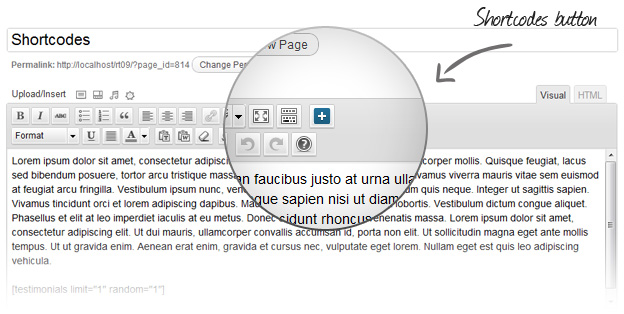

What is a shortcode?
Shortcodes, a simple set of functions for creating macro codes for use in post content. A trivial shortcode looks like this:
[divider]
You can then type any text within side the shortcode brackets and the style will be applied to the text.
You can also add shortcode in a very simple way. Click on the red button in your Wordpress editor, you will see a pop-up window with a list of available shortcodes. Select the code that you want to put in the text and press 'insert' button. The code that you selected appears in the editor - you can customize the parameters as you need.
